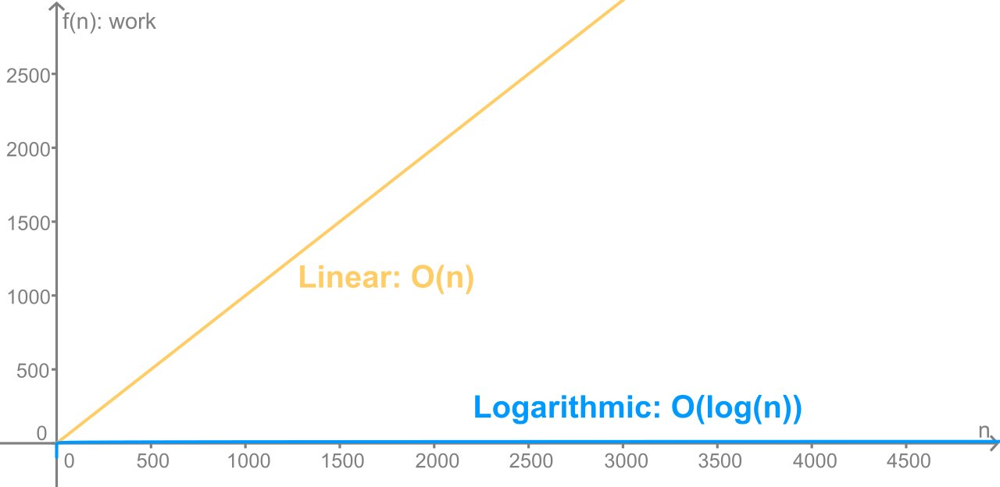

At the end of this lesson, you will be able to:
Last lesson we saw that an algorithm is an idea, separate from any language. So we can ask questions about the idea - and the most useful question of all is: how fast is it? Not "how fast does it run on my laptop today," but something deeper: as the problem gets bigger, how much more work does the algorithm have to do? That number is a property of the algorithm itself - it's the same whether you write it in Python, JavaScript, or Lisp.
To make this concrete, let's look at one of the most common tasks a computer performs: searching a list for a particular value. We'll compare two algorithms whose speeds turn out to be very different.
How would you find a value in a list? The simplest method: check the first item, then the second, then the third, and so on, until you find it or run out of list. Because you go in a straight line through the items, it's called linear search. In pseudocode:
set location to the start of the list
repeat until location is past the end of the list:
if the item at location is the key:
print "Found it!"
stop
move location forward one
print "Value not found"And here it is as a runnable Python program that hides a number in a list and searches for it:
import random
def main():
value = 6
numbers = []
for num in range(1, 10):
numbers.append(random.randrange(1, 10, 1))
print(numbers)
found = False
for num in range(0, len(numbers)):
if numbers[num] == value:
print("Your number is in index: ", num)
found = True
break
if not found:
print("Number not found!")
main()One new word in there: break means "stop the loop right now" - that's the "stop" step from our pseudocode. Once we've found the value, there's no reason to keep checking the rest of the list.
Linear search is simple, and it works on any list, sorted or not. But it has one big weakness: in the worst case, you have to look at every single item. Imagine finding one person's number in a paper phone book by reading every entry from the start. For a small list that's fine. For a list of a million things, it's miserable.
If the list is sorted, there's a far smarter approach. Think of the "guess my number" game: I'm thinking of a number from 1 to 1000, and each time you guess I tell you "higher" or "lower." You wouldn't guess 1, 2, 3... You'd guess 500 - the middle - and instantly throw away half the possibilities. Then 250 or 750, throwing away half of what's left. That's binary search: always check the middle, and cut the problem in half every single step.
Here's binary search hunting for the value 95 in a sorted list. It checks the middle (index 7, value 68). Since 95 is bigger, the whole left half is gone:
| Index: | 0 | 1 | 2 | 3 | 4 | 5 | 6 | 7 | 8 | 9 | 10 | 11 | 12 | 13 | 14 |
| Value: | 1 | 12 | 23 | 43 | 55 | 61 | 67 | 68 | 87 | 89 | 91 | 95 | 113 | 114 | 115 |
Now it checks the middle of what's left (index 11, value 95) - found it, in just two guesses:
| Index: | 0 | 1 | 2 | 3 | 4 | 5 | 6 | 7 | 8 | 9 | 10 | 11 | 12 | 13 | 14 |
| Value: | 1 | 12 | 23 | 43 | 55 | 61 | 67 | 68 | 87 | 89 | 91 | 95 | 113 | 114 | 115 |
Play with the animation below - watch how each guess slices the remaining list in half:
Here's a small program that flips the game around: you think of a number, and the computer guesses it using binary search. Under the stated rules, it should find the number in only a handful of guesses—that's binary search in action.
import math
import random
LIMIT = 1000
TARGET = math.ceil(math.log(LIMIT, 2))
def computerGuesses():
print("Hello, please pick a number between 1 and", LIMIT)
print("I will guess it in", TARGET, "guesses or less!")
numGuesses = 0
low = 1
high = LIMIT
while True:
numGuesses = numGuesses + 1
guess = low + int((high - low) / 2)
print("My guess is", guess)
feedback = int(input("Enter 1 for too low, 2 for too high, or 3 for just right! "))
if feedback == 1:
low = guess + 1
elif feedback == 2:
high = guess - 1
else:
break
print("Got it in", numGuesses, "guesses! Can you do better?")
computerGuesses()There's one catch, and it's the price of admission: binary search only works on a sorted list. The whole "throw away half" trick depends on knowing which half to throw away, and that only makes sense if the list is in order. Linear search will trudge through any pile; binary search needs the pile sorted first.
Here's where the contrast becomes striking. Let's count the worst-case number of checks each algorithm needs as the list grows. Linear search might have to check every item, so its work grows right along with the list. Binary search cuts the list in half each step, so its work grows very slowly:
List Size |
Linear Search |
Binary Search |
|---|---|---|
10,000 |
10,000 |
14 |
100,000 |
100,000 |
17 |
1,000,000 |
1,000,000 |
20 |
1,000,000,000 |
1,000,000,000 |
30 |
Look at that bottom row. To search a billion things, linear search might do a billion checks; binary search does thirty. The same comparison drawn as a graph shows linear search climbing in a straight line while binary search flattens out almost immediately:

And here's the thing to hold onto: that gap has nothing to do with the programming language. Write both searches in Python, JavaScript, or Lisp - binary search still wins by the same enormous margin, because the advantage lives in the algorithm, not the code. This is the whole reason it's worth thinking about computation as a thing in itself.
Try it: The Week 7 activity, “Beat the Computer,” turns the comparison into a race between linear and binary search. It is the hands-on version of the table above.
Coming up next: "grows in a straight line" and "barely grows at all" are exactly the patterns computer scientists name with Big-O notation - a tidy way to describe an algorithm's speed without picking a language. That's the next lesson.